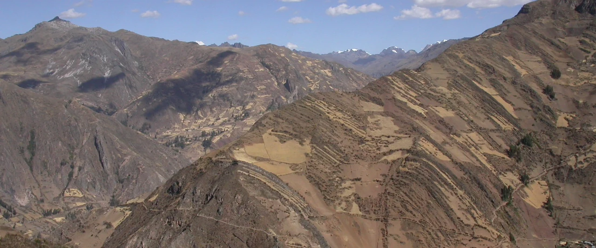

Chavín & the Andean Formative
Social complexity, ceremonial centres, household–monument relationships, ceramics, foodways, and long-term political transformation.
Archaeology · Research & Innovation · Higher Education
Archaeologist · Professor · Research & Innovation Leader
I study the political, ritual, and chronological dynamics of the ancient Andes while leading institutional systems for research, innovation, scientific integrity, intellectual property, and technology transfer.

My academic work focuses on Chavín de Huántar and the Andean Formative, with particular emphasis on chronology, ritual practice, monumentality, core–periphery relations, and archaeological landscapes.
My institutional work spans university-wide academic management, research strategy, faculty affairs, governance, competitive funding, intellectual property, technology transfer, ethics, integrity, and international collaboration. I have served as Academic Vice-Rector at two universities, Research Vice-Rector, Dean, and Executive Director of a Vice-Rectorate for Research while remaining active in international research and publication.
Social complexity, ceremonial centres, household–monument relationships, ceramics, foodways, and long-term political transformation.
Radiocarbon synthesis, chronological hygiene, probabilistic modelling, activity pulses, and explicit treatment of uncertainty.
Embedded religiousness, monumentality, authority, exchange, feasting, and the institutional production of ritual power.
Geoglyphs, route proximity, RPAS documentation, low-deposition landscapes, and formal evaluation of spatial associations.
Urban pressure, archaeological loss, spatial forecasting, preventive archaeology, and quantitative heritage governance.
Institutional research governance, innovation ecosystems, technology transfer, integrity, bibliometrics, and performance systems.
Peer-reviewed publications, book chapters, and current research, organized by publication type and scholarly theme. The Chavín & Wacheqsa filter brings together journal articles and book chapters on chronology, ceramics, foodways, domestic occupation, feasting, power, and quantitative analysis at Chavín de Huántar.
Published journal articles and book chapters are presented separately from accepted papers and current manuscripts.
Research, innovation & technology transfer
My academic leadership has centred on turning institutional strategy into measurable systems for research quality, faculty development, governance, competitive funding, innovation, and scientific integrity across multidisciplinary universities.
Leadership figures are drawn from the 2026 Academic Executive Curriculum Vitae.
Policies, performance indicators, ethics and integrity, faculty research systems, research committees, and multicampus coordination.
IP strategy, patent portfolios, technology maturation, university–industry collaboration, and transfer pathways.
Research partnerships and funding relationships involving Stanford, Harvard, Universidade de São Paulo, National Geographic Society, Newton Fund, and Global Heritage Fund.
Long-term archaeological research integrating excavation, chronology, ceramics, household archaeology, ritual, and authority.
ChavínLong-term programSurvey, RPAS documentation, ceramic association, spatial modelling, and route-proximity analysis in the middle Chillón Valley.
GeoglyphsSpatial analysisResearch on Kotosh Religious Tradition architecture in the Huarmey Valley and ritual practice outside major ceremonial centres.
KotoshFormativeMicrobotanical and residue-oriented research on culinary equipment from Chavín de Huántar.
FoodwaysArchaeometryUniversidad Privada del Norte · Professor
Universidad Privada San Juan Bautista
Universidad Privada San Juan Bautista
Universidad Científica del Sur
Universidad Científica del Sur
Universidad San Ignacio de Loyola
Universidad San Ignacio de Loyola